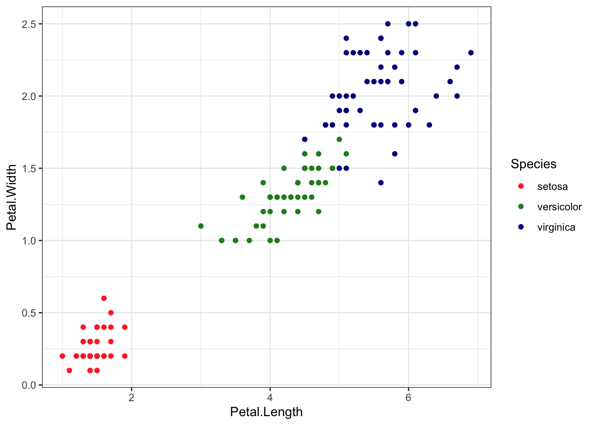

## Gentle Machine Learning## Principal Component Analysis# Dataset: USArrests is the sample dataset used in # McNeil, D. R. (1977) Interactive Data Analysis. New York: Wiley.# Murder numeric Murder arrests (per 100,000)# Assault numeric Assault arrests (per 100,000)# UrbanPop numeric Percent urban population# Rape numeric Rape arrests (per 100,000)# For each of the fifty states in the United States, the dataset contains the number # of arrests per 100,000 residents for each of three crimes: Assault, Murder, and Rape. # UrbanPop is the percent of the population in each state living in urban areas.library(datasets)library(ISLR)arrest = USArrestsstates=row.names(USArrests)names(USArrests)
[1] "Murder" "Assault" "UrbanPop" "Rape"
# Get means and variances of variablesapply(USArrests, 2, mean)
The following objects are masked from 'package:stats':
filter, lag
The following objects are masked from 'package:base':
intersect, setdiff, setequal, union
library(ggplot2)library(RColorBrewer)computers =read.csv("https://raw.githubusercontent.com/guru99-edu/R-Programming/master/computers.csv") # Only retain two variables for illustrationrescaled_comp <- computers[4:5] %>%mutate(hd_scal =scale(hd),ram_scal =scale(ram)) %>%select(c(hd_scal, ram_scal))ggplot(data = rescaled_comp, aes(x = hd_scal, y = ram_scal)) +geom_point(pch=20, col ="blue") +theme_bw() +labs(x ="Hard drive size (Scaled)", y ="RAM size (Scaled)" ) +theme(text =element_text(family="Georgia"))
#install.packages("animation")library(animation)set.seed(2345)library(animation)# Animate the K-mean clustering process, cluster no. = 4kmeans.ani(rescaled_comp[1:2], centers =4, pch =15:18, col =1:4)
## Iris example# Without grouping by speciesggplot(iris, aes(Petal.Length, Petal.Width)) +geom_point() +theme_bw() +scale_color_manual(values=c("firebrick1","forestgreen","darkblue"))
# With grouping by speciesggplot(iris, aes(Petal.Length, Petal.Width, color = Species)) +geom_point() +theme_bw() +scale_color_manual(values=c("firebrick1","forestgreen","darkblue"))

# Check k-means clusters## Starting with three clusters and 20 initial configurationsset.seed(20)irisCluster <-kmeans(iris[, 3:4], 3, nstart =20)irisCluster